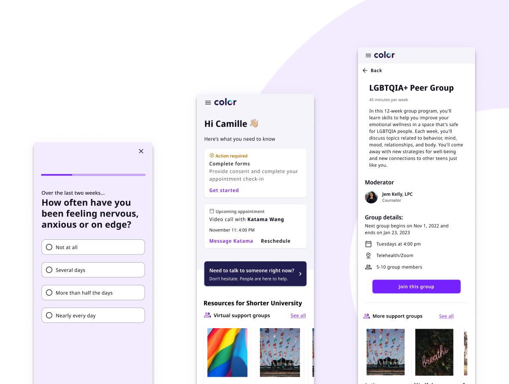

Hi! 👋 My name is Elise.
I'm a product designer who specializes in creating inclusive products and
systems.
Selected work

Uno Digital
As the founding designer at Uno Health, I led product strategy, design, and branding of Uno Digital, a service that helps Medicare members check their eligibility and enroll in state and federal programs like Medicaid. I drove iterative pilots and experimentation to create software that is accessible to older adults, proving out Uno's digital strategy, and helping thousands of Medicare Members get access to important financial assistance.
